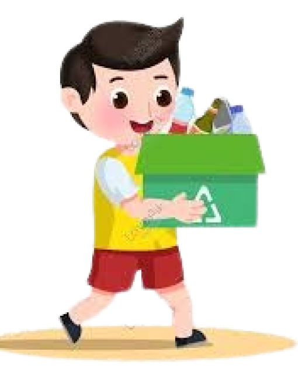
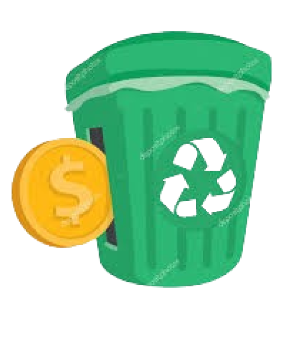

SAMPUN adalah sebuah startup yang berkolaborasi dengan Bank Sampah. Di situs ini, pengguna dapat menukar sampah mereka, seperti botol plastik, kardus, kertas, dan kaleng, untuk mendapatkan poin. Setiap kilogram sampah yang ditukar akan dihargai dengan poin, dengan jumlah poin yang diperoleh bergantung pada jenis sampah yang ditukar. Poin yang diperoleh dapat ditukar dengan barang hasil daur ulang sampah.
"Sampun (Sampah Membangun)" diharapkan menjadi solusi inovatif dalam mengelola masalah sampah di Kota Mataram. Dengan adanya sampun diharapkan dapat meningkatkan kesadaran masyarakat tentang pentingnya pengolahan sampah yang berkelanjutan.
Program tukar sampah menjadi poin adalah inisiatif yang bertujuan untuk mendorong masyarakat untuk aktif dalam menjaga lingkungan dengan memperbaiki perilaku mereka terhadap sampah
Melalui proses tukar poin menjadi barang,program ini memberikan insentif kepada masyarakat untuk berpartisipasi dalam kegiatan yang berkelanjutan dan menjaga lingkungan, sambil memberikan manfaat langsung bagi mereka
 SELAMAT DATANG DI SAMPUN!